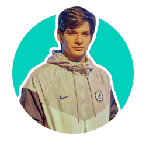
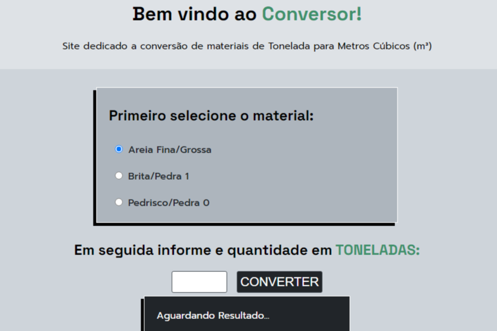
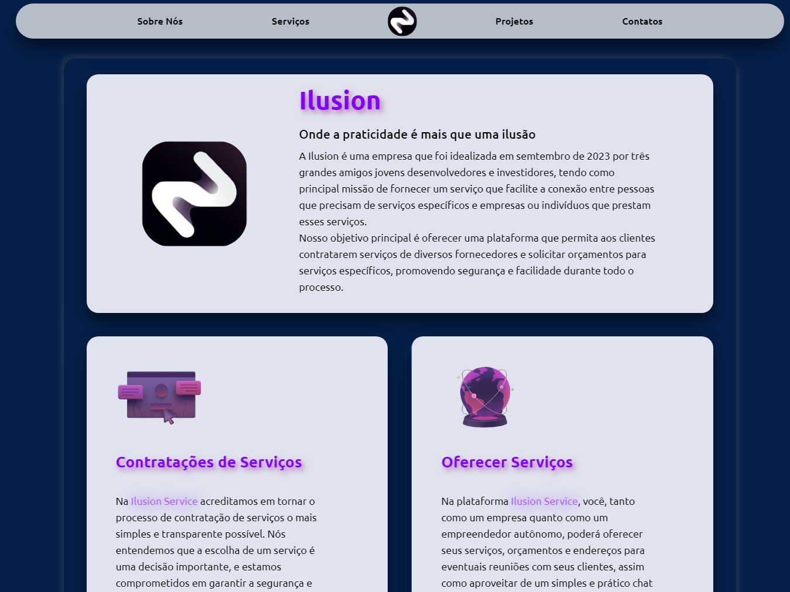

Olá eu sou o João Victor
Noschang Silva
Noschang Silva

Natural da Cidade de Campo verde no estado de Mato Grosso, Brasil. Faz faculdade de Análise e desenvolvimento de sistema no instituto federal do Mato Grosso (IFMT), e encontrasse no segundo semestre.
Atulamente não possui nenhuma esperiência de trabalho no segmento, apenas experiências adiquiridas por meio de projetos práticos implementados por meio da faculdade ou cursos online.
Suas habilidades podem ser observadas em alguns campos da área, como é o caso de:

Site desenvolvido utilizando HTML5 semântico, CSS3 e JavaScript. Com a finalidasde de auxiliar no calculo de conversão de toneladas de areia, brita e pedrisco, trazendo o multiplo a ser utlizado principalmente na entradas de notas do sistema Santri. Solução pensada para faciliatar o meu dia a dia e posibilitar maior agilidade em meu trabalho.

Site desenvolvido para projeto acadêmico com o intuito de explorar e praticar habilidades em HTML5 semântico, CSS3 e interações com JavaScript. Neste projeto fui o principal responsavél no desenvolvimento do Layout e no estudo de caso de usuário. Além de buscar técnicas modernas de implementação de elementos e estudos de cores e design.
Desenvolvido para um projeto acadêmico, tratasse de um banco de dados para um site que busca ligar pessoas que oferecem serviçõs, dos mais diversos tipos, às pessoas que desejam contrata-los.